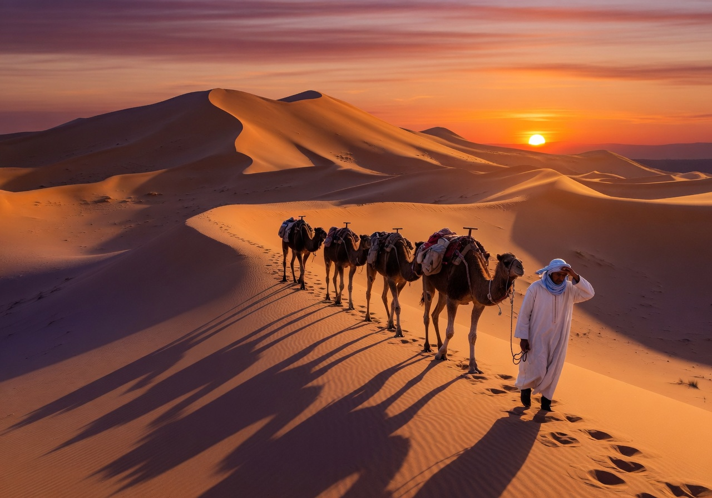
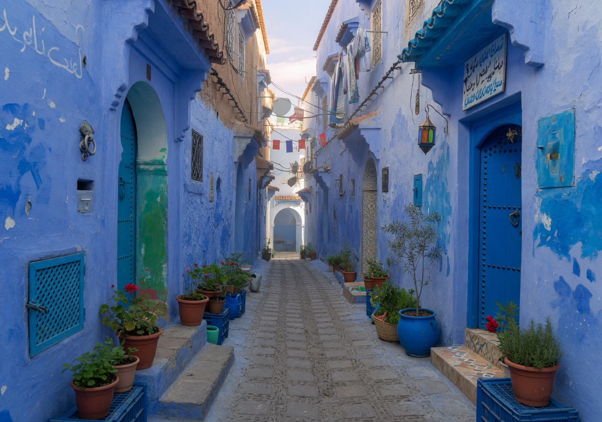
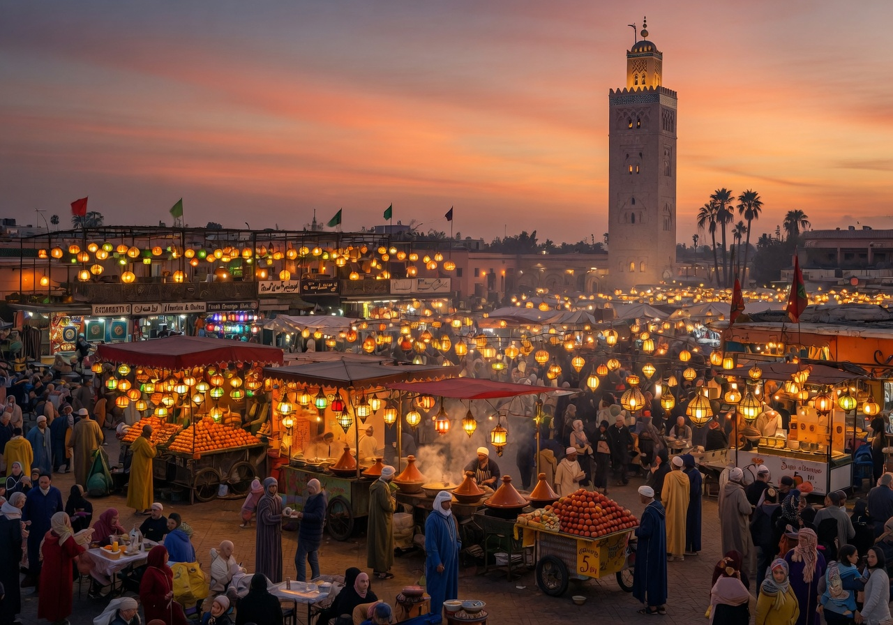
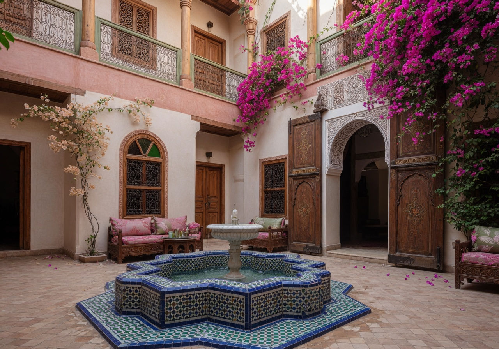
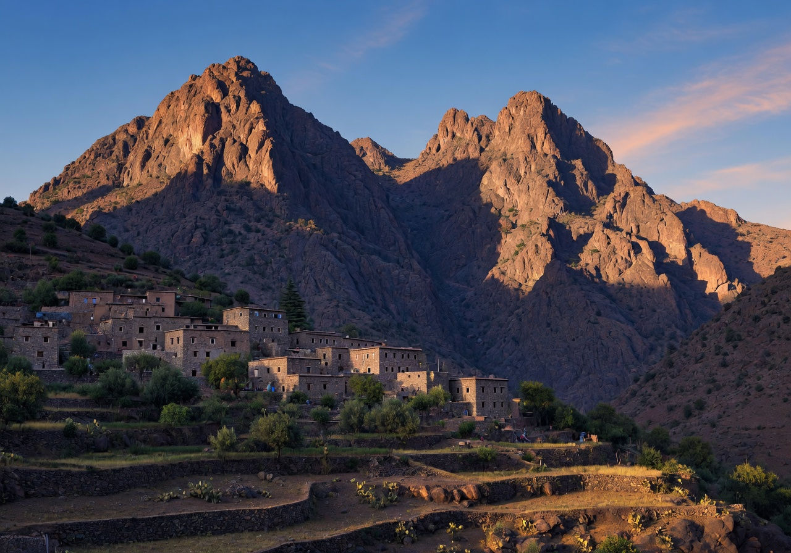
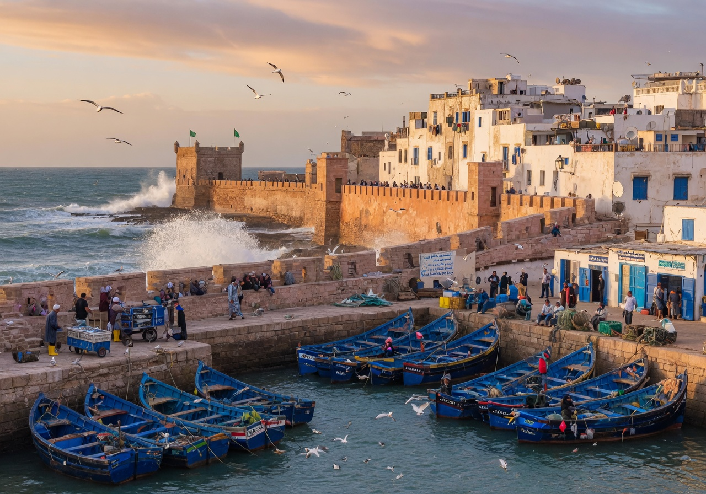

The gate to Morocco's soul.
Journey beyond the ordinary. Experience ancient medinas, endless dunes, and the warm hospitality of a timeless land.






Tell us where you're coming from, how long you're staying, and what interests you most. We'll craft a personalized itinerary with the right arrival airport, transportation, and day-by-day plan.
This determines the best arrival airport (especially important for flights from the USA) and shapes your entire itinerary.
SELECT YOUR DEPARTURE REGION:
Choose the length that fits your schedule
Select all that call to you — we'll tailor the route accordingly
Takes just a moment • Completely personalized
Filmed across Marrakech, the Sahara Desert, Chefchaouen, Essaouira & the High Atlas Mountains